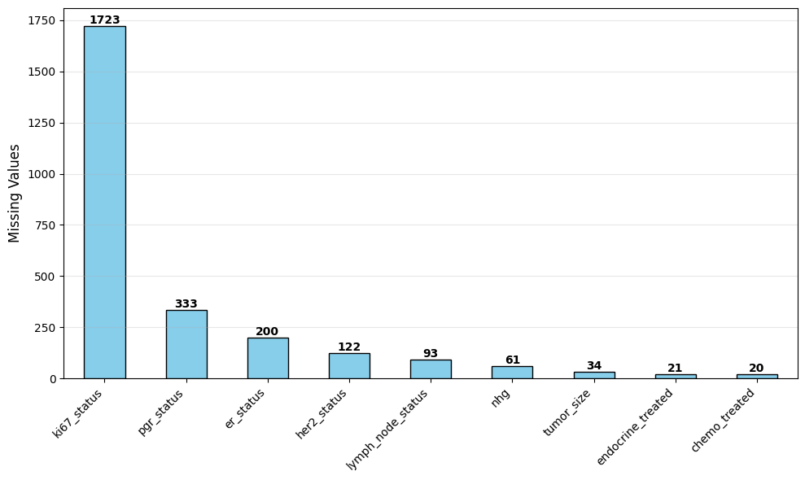
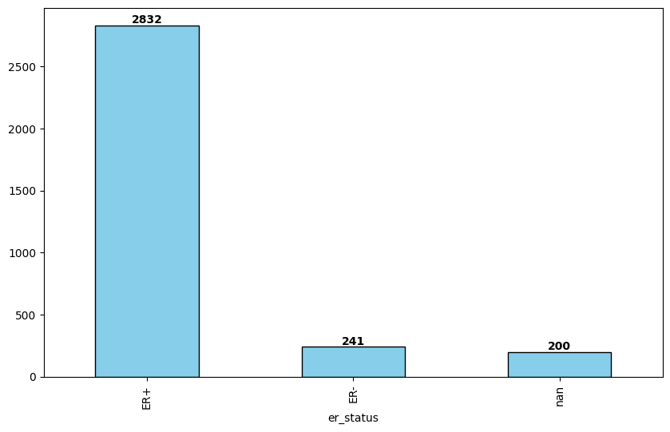
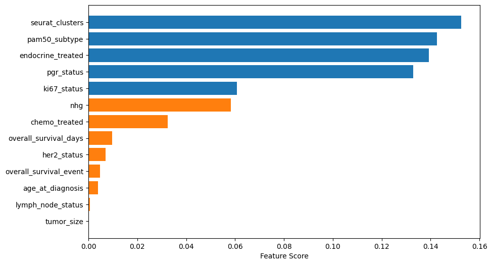

import pandas as pd
import numpy as np
import matplotlib.pyplot as plt
from sklearn.impute import KNNImputer
from sklearn.feature_selection import SelectKBest, mutual_info_classif
from sklearn.model_selection import GridSearchCV, cross_val_score
from sklearn.linear_model import LogisticRegression
from sklearn.ensemble import RandomForestClassifier
from sklearn.svm import SVC
from sklearn.pipeline import Pipeline
from sklearn.compose import ColumnTransformer
from sklearn.preprocessing import StandardScaler, OrdinalEncoder
from IPython.display import display, HTMLPredicting ER status imputing missing values
Aim
The goal of this report is to predict the ER status for those patients where the ER status is unknown. To this end I used the GEO metadata downloaded in Downloading GEO data and the cluster assignments obtained in the report Identification of breast cancer subtypes and biomarkers using the Seurat workflow.
Workflow
I compared three supervised learning method (logist regression, random forest, support vector machine) optimizing their hyperparameters using a grid search with balanced accuracy as evaluation metric.
To handle missing data, I used the KNNimputer, which imputes values based on the nearest neighbors in the feature space.
For feature selection, I applied mutual_info_classif to retain the most informative features with respect to the target variable (ER status).
To address class imbalance, I set the parameter class_weight=balanced to ensure that the model gives appropriate attention to minority classes during training.
Conclusion
In terms of balanced accuracy, random forest slightly outperformed logistic regression and SVM.
Exploring dataset
Loading dataset
df = pd.read_table('data/cluster_anno_seurat.csv', sep=',')
df = df[['patient', 'age_at_diagnosis', 'tumor_size',
'lymph_node_status','er_status', 'pgr_status', 'her2_status',
'pam50_subtype', 'overall_survival_days', 'overall_survival_event',
'endocrine_treated', 'chemo_treated', 'ki67_status', 'nhg',
'seurat_clusters']]
df = df.set_index('patient')
df = df.replace({'endocrine_treated': {'no treated': 'untreated'}})
df = df.replace({'chemo_treated': {'no treated': 'untreated'}})
df = df.replace({'overall_survival_event': {'no survival': 'nosurvival'}})
df| age_at_diagnosis | tumor_size | lymph_node_status | er_status | pgr_status | her2_status | pam50_subtype | overall_survival_days | overall_survival_event | endocrine_treated | chemo_treated | ki67_status | nhg | seurat_clusters | |
|---|---|---|---|---|---|---|---|---|---|---|---|---|---|---|
| patient | ||||||||||||||
| F1 | 43 | 9.0 | NodeNegative | NaN | NaN | HER2- | Basal | 2367 | nosurvival | untreated | treated | NaN | G3 | 5 |
| F2 | 48 | 14.0 | NodePositive | ER+ | PgR+ | HER2- | LumA | 2367 | nosurvival | treated | treated | NaN | G2 | 0 |
| F3 | 69 | 27.0 | NodePositive | ER+ | PgR+ | HER2- | LumB | 2168 | survival | treated | treated | NaN | G3 | 1 |
| F4 | 39 | 51.0 | NodePositive | ER+ | NaN | HER2+ | LumA | 2416 | nosurvival | treated | treated | NaN | G3 | 4 |
| F5 | 73 | 60.0 | NodePositive | ER+ | NaN | HER2- | Normal | 2389 | nosurvival | treated | untreated | NaN | G2 | 3 |
| ... | ... | ... | ... | ... | ... | ... | ... | ... | ... | ... | ... | ... | ... | ... |
| F3269 | 72 | 13.0 | NodeNegative | ER+ | PgR+ | HER2- | LumB | 856 | nosurvival | treated | treated | Ki67+ | G2 | 7 |
| F3270 | 69 | 30.0 | NodePositive | ER+ | PgR+ | HER2- | LumA | 861 | nosurvival | treated | treated | Ki67+ | G2 | 8 |
| F3271 | 73 | 18.0 | NodeNegative | ER+ | PgR- | NaN | LumB | 862 | nosurvival | treated | treated | Ki67+ | G3 | 4 |
| F3272 | 67 | 33.0 | NodePositive | ER+ | PgR+ | HER2- | LumA | 844 | nosurvival | treated | untreated | Ki67+ | G2 | 0 |
| F3273 | 60 | 17.0 | NodePositive | ER+ | PgR+ | HER2- | LumA | 843 | nosurvival | treated | treated | Ki67+ | G2 | 3 |
3273 rows × 14 columns
Missing data Distribution
features = df.columns
df_miss = df[features].isnull().sum()
df_miss = df_miss[df_miss > 0].sort_values(ascending=False)
fig, ax = plt.subplots(figsize=(10, 6))
df_miss.plot(kind='bar', ax=ax, color='skyblue', edgecolor='black')
plt.ylabel('Missing Values', fontsize=12)
plt.xticks(rotation=45, ha='right')
plt.grid(axis='y', alpha=0.3)
# Add value labels
for i, v in enumerate(df_miss.values):
ax.text(i, v + 0.1, str(v), ha='center', va='bottom', fontweight='bold')
plt.tight_layout()
plt.show()
missperc = (len(df_miss)/len(features))*100
print(f"Tot features: {len(features)}")
print(f"Tot features with missing values: {len(df_miss)} ({missperc:0.1f}%)")
print(f"Feature with missing values: {[col for col in df_miss.index]}")
print(f"Feature without missing values: {[col for col in df.columns if col not in df_miss.index]}")

Tot features: 14
Tot features with missing values: 9 (64.3%)
Feature with missing values: ['ki67_status', 'pgr_status', 'er_status', 'her2_status', 'lymph_node_status', 'nhg', 'tumor_size', 'endocrine_treated', 'chemo_treated']
Feature without missing values: ['age_at_diagnosis', 'pam50_subtype', 'overall_survival_days', 'overall_survival_event', 'seurat_clusters']ER status distribution
fig, ax = plt.subplots(figsize=(10, 6))
df['er_status'].value_counts(dropna=False).plot(kind='bar', ax=ax, color='skyblue', edgecolor='black')
for i, v in enumerate(df['er_status'].value_counts(dropna=False)):
ax.text(i, v + 0.1, str(v), ha='center', va='bottom', fontweight='bold')
Splitting data in training and test set
y = df['er_status']
X_train, y_train = df.loc[~y.isna(),:].drop('er_status', axis=1), y[~y.isna()]
X_test, y_test = df.loc[y.isna(),:].drop('er_status', axis=1), y[y.isna()]Imputation pipeline
def imputation_pipeline(X_train, classifier, nfeat = 5):
# identify feature type
categorical_features = X_train.select_dtypes(include=['object', 'category']).columns.tolist()
numerical_features = X_train.select_dtypes(include=['int64', 'float64']).columns.tolist()
# build imputation pipeline
# OrdinalEncoder: designed for feature encoding, accept 2d array (X,y)
# LabelEncoder: designed for target encoding, accept 1d array (y)
categorical_imputer = Pipeline(steps=[
('encoder', OrdinalEncoder()),
('imputer', KNNImputer(n_neighbors=50))
])
numerical_imputer = Pipeline(steps=[
('imputer', KNNImputer(n_neighbors=20)),
('scaler', StandardScaler())
])
imputation = ColumnTransformer(transformers=[
('categorical', categorical_imputer, categorical_features),
('numerical', numerical_imputer, numerical_features)
])
# return pipeline
return Pipeline(steps=[
('imputation', imputation),
('feature_selection', SelectKBest(mutual_info_classif, k=nfeat)),
('classifier', classifier)
])
## using smote instead of class_weight='balanced'
# from imblearn.over_sampling import SMOTE
# from imblearn.pipeline import Pipeline as ImbPipeline
# return ImbPipeline(steps=[
# ('imputation', imputation),
# ('smote', SMOTE(random_state=0)), # add SMOTE after imputation
# ('classifier', classifier) # remove class_weight='balanced' from classifiers
# ])Utility function to format results
## utils to show results
def show_results(fitted_pipeline, X_test, y_pred_proba):
results = pd.DataFrame({
'Patient_ID': X_test.index,
f'Prob_{fitted_pipeline.classes_[0]}': y_pred_proba[:, 0],
f'Prob_{fitted_pipeline.classes_[1]}': y_pred_proba[:, 1],
'Max_Probability': np.max(y_pred_proba, axis=1),
'Predicted_ER_Status': y_pred,
'Confidence_Level': np.where(np.max(y_pred_proba, axis=1) > 0.8, 'High',
np.where(np.max(y_pred_proba, axis=1) > 0.6, 'Medium',
'Low'))
}).set_index('Patient_ID')
er_df = pd.DataFrame({
'Label': {class_label: idx for idx, class_label in enumerate(fitted_pipeline.classes_)},
'Count': pd.Series(y_pred).value_counts()
}).rename_axis('ER_Status')
confidence_df = pd.DataFrame({
'Count': results['Confidence_Level'].value_counts(),
'Percentage': (results['Confidence_Level'].value_counts(normalize=True) * 100).round(2)
})
# create side-by-side HTML
html_str = f"""
<div style="display: flex; gap: 50px;">
<div>
<h4>ER Status Distribution</h4>
{er_df.to_html()}
</div>
<div>
<h4>Confidence Level Distribution</h4>
{confidence_df.to_html()}
</div>
</div>
"""
return results, html_strLogistic regression
model_pipeline = imputation_pipeline(X_train,
classifier=LogisticRegression(random_state=0, max_iter=1000, class_weight='balanced'),
nfeat=5)
cv_scores = cross_val_score(model_pipeline, X_train, y_train, cv=5, scoring='balanced_accuracy')
print(f"Cross-validation accuracy: {cv_scores.mean():.3f} (+/- {cv_scores.std() * 2:.3f})")Cross-validation accuracy: 0.952 (+/- 0.062)# Fit the final model
model_pipeline.fit(X_train, y_train)Pipeline(steps=[('imputation',
ColumnTransformer(transformers=[('categorical',
Pipeline(steps=[('encoder',
OrdinalEncoder()),
('imputer',
KNNImputer(n_neighbors=50))]),
['lymph_node_status',
'pgr_status', 'her2_status',
'pam50_subtype',
'overall_survival_event',
'endocrine_treated',
'chemo_treated',
'ki67_status', 'nhg']),
('numerical',
Pipeline(steps=[('imputer',
KNNImputer(n_neighbors=20)),
('scaler',
StandardScaler())]),
['age_at_diagnosis',
'tumor_size',
'overall_survival_days',
'seurat_clusters'])])),
('feature_selection',
SelectKBest(k=5,
score_func=<function mutual_info_classif at 0x7f5f0cf41990>)),
('classifier',
LogisticRegression(class_weight='balanced', max_iter=1000,
random_state=0))])In a Jupyter environment, please rerun this cell to show the HTML representation or trust the notebook. On GitHub, the HTML representation is unable to render, please try loading this page with nbviewer.org.
Pipeline(steps=[('imputation',
ColumnTransformer(transformers=[('categorical',
Pipeline(steps=[('encoder',
OrdinalEncoder()),
('imputer',
KNNImputer(n_neighbors=50))]),
['lymph_node_status',
'pgr_status', 'her2_status',
'pam50_subtype',
'overall_survival_event',
'endocrine_treated',
'chemo_treated',
'ki67_status', 'nhg']),
('numerical',
Pipeline(steps=[('imputer',
KNNImputer(n_neighbors=20)),
('scaler',
StandardScaler())]),
['age_at_diagnosis',
'tumor_size',
'overall_survival_days',
'seurat_clusters'])])),
('feature_selection',
SelectKBest(k=5,
score_func=<function mutual_info_classif at 0x7f5f0cf41990>)),
('classifier',
LogisticRegression(class_weight='balanced', max_iter=1000,
random_state=0))])ColumnTransformer(transformers=[('categorical',
Pipeline(steps=[('encoder', OrdinalEncoder()),
('imputer',
KNNImputer(n_neighbors=50))]),
['lymph_node_status', 'pgr_status',
'her2_status', 'pam50_subtype',
'overall_survival_event', 'endocrine_treated',
'chemo_treated', 'ki67_status', 'nhg']),
('numerical',
Pipeline(steps=[('imputer',
KNNImputer(n_neighbors=20)),
('scaler', StandardScaler())]),
['age_at_diagnosis', 'tumor_size',
'overall_survival_days',
'seurat_clusters'])])['lymph_node_status', 'pgr_status', 'her2_status', 'pam50_subtype', 'overall_survival_event', 'endocrine_treated', 'chemo_treated', 'ki67_status', 'nhg']
OrdinalEncoder()
KNNImputer(n_neighbors=50)
['age_at_diagnosis', 'tumor_size', 'overall_survival_days', 'seurat_clusters']
KNNImputer(n_neighbors=20)
StandardScaler()
SelectKBest(k=5, score_func=<function mutual_info_classif at 0x7f5f0cf41990>)
LogisticRegression(class_weight='balanced', max_iter=1000, random_state=0)
# Make predictions on test set
y_pred = model_pipeline.predict(X_test)
y_pred_proba = model_pipeline.predict_proba(X_test)
results, html_str = show_results(model_pipeline, X_test, y_pred_proba)
display(results)
display(HTML(html_str))| Prob_ER+ | Prob_ER- | Max_Probability | Predicted_ER_Status | Confidence_Level | |
|---|---|---|---|---|---|
| Patient_ID | |||||
| F1 | 0.017625 | 0.982375 | 0.982375 | ER- | High |
| F6 | 0.017625 | 0.982375 | 0.982375 | ER- | High |
| F15 | 0.416440 | 0.583560 | 0.583560 | ER- | Low |
| F16 | 0.017625 | 0.982375 | 0.982375 | ER- | High |
| F27 | 0.026501 | 0.973499 | 0.973499 | ER- | High |
| ... | ... | ... | ... | ... | ... |
| F2962 | 0.819012 | 0.180988 | 0.819012 | ER+ | High |
| F2965 | 0.013485 | 0.986515 | 0.986515 | ER- | High |
| F2967 | 0.987457 | 0.012543 | 0.987457 | ER+ | High |
| F2976 | 0.982419 | 0.017581 | 0.982419 | ER+ | High |
| F3242 | 0.030064 | 0.969936 | 0.969936 | ER- | High |
200 rows × 5 columns
ER Status Distribution
| Label | Count | |
|---|---|---|
| ER_Status | ||
| ER+ | 0 | 33 |
| ER- | 1 | 167 |
Confidence Level Distribution
| Count | Percentage | |
|---|---|---|
| Confidence_Level | ||
| High | 174 | 87.0 |
| Medium | 18 | 9.0 |
| Low | 8 | 4.0 |
Feature selection
In blue the top 5 features used in the model, in orange the discarded ones.
categorical_features = X_train.select_dtypes(include=['object', 'category']).columns.tolist()
numerical_features = X_train.select_dtypes(include=['int64', 'float64']).columns.tolist()
all_features = np.array(categorical_features + numerical_features)
feature_selector = model_pipeline.named_steps['feature_selection']
feature_index = feature_selector.get_support(indices=True)
selected_feature = all_features[feature_index]
feature_importance = pd.DataFrame({
'Feature': all_features,
'Score': feature_selector.scores_,
'Selected': feature_selector.get_support()
}).sort_values('Score', ascending=False)
# display(feature_importance)
plt.figure(figsize=(10, 6))
colors = ['tab:blue' if selected else 'tab:orange' for selected in feature_importance['Selected']]
plt.barh(feature_importance['Feature'], feature_importance['Score'], color=colors)
plt.xlabel('Feature Score')
plt.gca().invert_yaxis()
# fig, ax = plt.subplots(figsize=(10, 6))
# colors = ['tab:green' if selected else 'tab:orange' for selected in feature_importance['Selected']]
# ax.barh(feature_importance['Feature'], feature_importance['Score'], color=colors)
# ax.set_xlabel('Feature Score')
# ax.invert_yaxis()
Parameter tuning
%%time
model_pipeline = imputation_pipeline(X_train,
classifier= LogisticRegression(random_state=0, max_iter=1000, class_weight='balanced'),
nfeat = 5)
param_grid = [
{
'classifier__C': [0.01, 0.1, 1, 10, 100],
'classifier__penalty': ['l2'],
'classifier__solver': ['lbfgs', 'newton-cholesky']
},
{
'classifier__C': [0.01, 0.1, 1, 10, 100],
'classifier__penalty': ['l1', 'l2'],
'classifier__solver': ['liblinear', 'saga']
},
{
'classifier__C': [0.01, 0.1, 1, 10, 100],
'classifier__penalty': ['elasticnet'],
'classifier__solver': ['saga'], # saga is the only solver that supports elasticnet
'classifier__l1_ratio': [0.1, 0.5, 0.7, 0.9]
}
]
print("Starting Grid Search for Logistic Regression...")
grid_lr = GridSearchCV(
model_pipeline,
param_grid,
cv=5,
scoring='balanced_accuracy',
n_jobs=-1,
verbose=1
)
# Fit the grid search
grid_lr.fit(X_train, y_train)
# Display results
print("\nBest parameters:")
print(grid_lr.best_params_)
print(f"\nAveraged cross-validation balanced accuracy score: {grid_lr.best_score_:.3f}")Starting Grid Search for Logistic Regression...
Fitting 5 folds for each of 50 candidates, totalling 250 fits
Best parameters:
{'classifier__C': 100, 'classifier__penalty': 'l2', 'classifier__solver': 'saga'}
Averaged cross-validation balanced accuracy score: 0.955
CPU times: user 4.77 s, sys: 612 ms, total: 5.39 s
Wall time: 27.8 s# Use the best model for predictions
best_model_lr = grid_lr.best_estimator_
y_pred = best_model_lr.predict(X_test)
y_pred_proba = best_model_lr.predict_proba(X_test)
results_lr, html_str = show_results(best_model_lr, X_test, y_pred_proba)
display(results_lr)
display(HTML(html_str))| Prob_ER+ | Prob_ER- | Max_Probability | Predicted_ER_Status | Confidence_Level | |
|---|---|---|---|---|---|
| Patient_ID | |||||
| F1 | 0.015638 | 0.984362 | 0.984362 | ER- | High |
| F6 | 0.015638 | 0.984362 | 0.984362 | ER- | High |
| F15 | 0.403025 | 0.596975 | 0.596975 | ER- | Low |
| F16 | 0.015638 | 0.984362 | 0.984362 | ER- | High |
| F27 | 0.023326 | 0.976674 | 0.976674 | ER- | High |
| ... | ... | ... | ... | ... | ... |
| F2962 | 0.827821 | 0.172179 | 0.827821 | ER+ | High |
| F2965 | 0.011873 | 0.988127 | 0.988127 | ER- | High |
| F2967 | 0.988520 | 0.011480 | 0.988520 | ER+ | High |
| F2976 | 0.984569 | 0.015431 | 0.984569 | ER+ | High |
| F3242 | 0.026950 | 0.973050 | 0.973050 | ER- | High |
200 rows × 5 columns
ER Status Distribution
| Label | Count | |
|---|---|---|
| ER_Status | ||
| ER+ | 0 | 32 |
| ER- | 1 | 168 |
Confidence Level Distribution
| Count | Percentage | |
|---|---|---|
| Confidence_Level | ||
| High | 175 | 87.5 |
| Medium | 16 | 8.0 |
| Low | 9 | 4.5 |
Comparing tuned and untuned model
The tuned model slightly outperformed the untuned one.
print("Default model parameters:", model_pipeline.named_steps['classifier'].get_params())
print("Best tuned parameters:", best_model_lr.named_steps['classifier'].get_params())
# Compare probability distributions
print("\nDefault model confidence distribution:")
print(results['Confidence_Level'].value_counts())
print("\nTuned model confidence distribution:")
print(results_lr['Confidence_Level'].value_counts())
## compare averaged cross-validated balanced accuracy
print(f"\nAveraged cross-validated balanced accuracy (untuned model): {cv_scores.mean():.3f}")
print(f"Averaged cross-validation balanced accuracy score (tuned model): {grid_lr.best_score_:.3f}")Default model parameters: {'C': 1.0, 'class_weight': 'balanced', 'dual': False, 'fit_intercept': True, 'intercept_scaling': 1, 'l1_ratio': None, 'max_iter': 1000, 'multi_class': 'deprecated', 'n_jobs': None, 'penalty': 'l2', 'random_state': 0, 'solver': 'lbfgs', 'tol': 0.0001, 'verbose': 0, 'warm_start': False}
Best tuned parameters: {'C': 100, 'class_weight': 'balanced', 'dual': False, 'fit_intercept': True, 'intercept_scaling': 1, 'l1_ratio': None, 'max_iter': 1000, 'multi_class': 'deprecated', 'n_jobs': None, 'penalty': 'l2', 'random_state': 0, 'solver': 'saga', 'tol': 0.0001, 'verbose': 0, 'warm_start': False}
Default model confidence distribution:
Confidence_Level
High 174
Medium 18
Low 8
Name: count, dtype: int64
Tuned model confidence distribution:
Confidence_Level
High 175
Medium 16
Low 9
Name: count, dtype: int64
Averaged cross-validated balanced accuracy (untuned model): 0.952
Averaged cross-validation balanced accuracy score (tuned model): 0.955Random Frorest
%%time
model_pipeline = imputation_pipeline(X_train,
classifier = RandomForestClassifier(random_state=0, class_weight='balanced'),
nfeat=5)
param_grid = {
'classifier__n_estimators': [50, 100, 200],
'classifier__max_depth': [5, 10, 20, 30],
'classifier__min_samples_split': [2, 5, 10, 20],
'classifier__min_samples_leaf': [1, 2, 4, 8],
'classifier__max_features': ['sqrt', 'log2']
}
# from sklearn.tree import DecisionTreeClassifier
# DecisionTreeClassifier(random_state=0)
# param_grid = {
# 'classifier__max_depth': [5, 10, 20, 30],
# 'classifier__min_samples_split': [2, 5, 10, 20],
# 'classifier__min_samples_leaf': [1, 2, 4, 8],
# 'classifier__criterion': ['gini', 'entropy'],
# 'classifier__max_features': ['sqrt', 'log2']
# }
print("Starting Grid Search for Random Forest...")
grid_rf = GridSearchCV(
model_pipeline,
param_grid,
cv=5,
scoring='balanced_accuracy',
n_jobs=-1,
verbose=1
)
# Fit the grid search
grid_rf.fit(X_train, y_train)
# Display results
print("\nBest parameters:")
print(grid_rf.best_params_)
print(f"\nAveraged cross-validation balanced accuracy score: {grid_rf.best_score_:.3f}")Starting Grid Search for Random Forest...
Fitting 5 folds for each of 384 candidates, totalling 1920 fits
Best parameters:
{'classifier__max_depth': 5, 'classifier__max_features': 'log2', 'classifier__min_samples_leaf': 8, 'classifier__min_samples_split': 10, 'classifier__n_estimators': 50}
Averaged cross-validation balanced accuracy score: 0.963
CPU times: user 19 s, sys: 954 ms, total: 19.9 s
Wall time: 3min 27s# Use the best model for predictions
best_model_rf = grid_rf.best_estimator_
y_pred = best_model_rf.predict(X_test)
y_pred_proba = best_model_rf.predict_proba(X_test)
results_rf, html_str = show_results(best_model_rf, X_test, y_pred_proba)
display(results_rf)
display(HTML(html_str))| Prob_ER+ | Prob_ER- | Max_Probability | Predicted_ER_Status | Confidence_Level | |
|---|---|---|---|---|---|
| Patient_ID | |||||
| F1 | 0.081427 | 0.918573 | 0.918573 | ER- | High |
| F6 | 0.081427 | 0.918573 | 0.918573 | ER- | High |
| F15 | 0.790802 | 0.209198 | 0.790802 | ER+ | Medium |
| F16 | 0.081427 | 0.918573 | 0.918573 | ER- | High |
| F27 | 0.105113 | 0.894887 | 0.894887 | ER- | High |
| ... | ... | ... | ... | ... | ... |
| F2962 | 0.837857 | 0.162143 | 0.837857 | ER+ | High |
| F2965 | 0.080274 | 0.919726 | 0.919726 | ER- | High |
| F2967 | 0.999465 | 0.000535 | 0.999465 | ER+ | High |
| F2976 | 0.999871 | 0.000129 | 0.999871 | ER+ | High |
| F3242 | 0.163633 | 0.836367 | 0.836367 | ER- | High |
200 rows × 5 columns
ER Status Distribution
| Label | Count | |
|---|---|---|
| ER_Status | ||
| ER+ | 0 | 38 |
| ER- | 1 | 162 |
Confidence Level Distribution
| Count | Percentage | |
|---|---|---|
| Confidence_Level | ||
| High | 176 | 88.0 |
| Medium | 23 | 11.5 |
| Low | 1 | 0.5 |
SVM
%%time
model_pipeline = imputation_pipeline(X_train,
classifier= SVC(probability=True, class_weight='balanced'),
nfeat=5)
param_grid = [
# Grid for Linear kernel
{
'classifier__kernel': ['linear'],
'classifier__C': [0.01, 0.1, 1, 10, 100]
},
# Grid for RBF kernel
{
'classifier__kernel': ['rbf'],
'classifier__C': [0.01, 0.1, 1, 10, 100],
'classifier__gamma': [0.01, 0.1, 1, 10, 100]
},
# Grid for Polynomial kernel
{
'classifier__kernel': ['poly'],
'classifier__C': [0.01, 0.1, 1, 10, 100],
'classifier__degree': [2, 3, 4, 5]
}
]
print("Starting Grid Search for SVM...")
grid_svm = GridSearchCV(
model_pipeline,
param_grid,
cv=5,
scoring='balanced_accuracy',
n_jobs=-1,
verbose=1
)
# Fit the grid search
grid_svm.fit(X_train, y_train)
# Display results
print("\nBest parameters:")
print(grid_svm.best_params_)
print(f"\nAveraged cross-validation balanced accuracy score: {grid_svm.best_score_:.3f}")Starting Grid Search for SVM...
Fitting 5 folds for each of 50 candidates, totalling 250 fits
Best parameters:
{'classifier__C': 0.1, 'classifier__gamma': 0.1, 'classifier__kernel': 'rbf'}
Averaged cross-validation balanced accuracy score: 0.961
CPU times: user 5.21 s, sys: 419 ms, total: 5.63 s
Wall time: 40.1 s# Use the best model for predictions
best_model_svm = grid_svm.best_estimator_
y_pred = best_model_svm.predict(X_test)
y_pred_proba = best_model_svm.predict_proba(X_test)
results_svm, html_str = show_results(best_model_svm, X_test, y_pred_proba)
display(results_svm)
display(HTML(html_str))| Prob_ER+ | Prob_ER- | Max_Probability | Predicted_ER_Status | Confidence_Level | |
|---|---|---|---|---|---|
| Patient_ID | |||||
| F1 | 0.144080 | 0.855920 | 0.855920 | ER- | High |
| F6 | 0.144080 | 0.855920 | 0.855920 | ER- | High |
| F15 | 0.972072 | 0.027928 | 0.972072 | ER+ | High |
| F16 | 0.144080 | 0.855920 | 0.855920 | ER- | High |
| F27 | 0.370919 | 0.629081 | 0.629081 | ER- | Medium |
| ... | ... | ... | ... | ... | ... |
| F2962 | 0.979503 | 0.020497 | 0.979503 | ER+ | High |
| F2965 | 0.126436 | 0.873564 | 0.873564 | ER- | High |
| F2967 | 0.999174 | 0.000826 | 0.999174 | ER+ | High |
| F2976 | 0.999446 | 0.000554 | 0.999446 | ER+ | High |
| F3242 | 0.380777 | 0.619223 | 0.619223 | ER- | Medium |
200 rows × 5 columns
ER Status Distribution
| Label | Count | |
|---|---|---|
| ER_Status | ||
| ER+ | 0 | 27 |
| ER- | 1 | 173 |
Confidence Level Distribution
| Count | Percentage | |
|---|---|---|
| Confidence_Level | ||
| High | 147 | 73.5 |
| Medium | 40 | 20.0 |
| Low | 13 | 6.5 |
Results
Below we populate the original dataset with the predicted ER staus and the imputed values obtained by the best model (random forest) according to the averaged balanced accuracy.
pd.DataFrame({
'Model': ['Logistic Regression',
'Random Forest',
'SVM'],
'Avg_Balanced_Accuracy': [f"{grid_lr.best_score_:.3f}",
f"{grid_rf.best_score_:.3f}",
f"{grid_svm.best_score_:.3f}"],
}).set_index('Model').sort_values('Avg_Balanced_Accuracy', ascending=False)| Avg_Balanced_Accuracy | |
|---|---|
| Model | |
| Random Forest | 0.963 |
| SVM | 0.961 |
| Logistic Regression | 0.955 |
# get imputer for the best model
imputer = best_model_rf.named_steps['imputation']
# get fitted imputations
X_train_imputed = imputer.transform(X_train)
X_test_imputed = imputer.transform(X_test)
# split imputed data back into numerical and categorical parts
# nb: the slicing order is defined by ColumnTransformer in imputation_pipeline() -> categorical come before numerical features
cat_features = X_train.select_dtypes(include=['object', 'category']).columns.tolist()
num_features = X_train.select_dtypes(include=['int64', 'float64']).columns.tolist()
n_cat = len(cat_features)
n_num = len(num_features)
X_train_cat = X_train_imputed[:, :n_cat]
X_train_num = X_train_imputed[:, n_cat:n_num+n_cat]
X_test_cat = X_test_imputed[:, :n_cat]
X_test_num = X_test_imputed[:, n_cat:n_num+n_cat]
# get the ordinal encoder from the categorical transformer
categorical_transformer = imputer.named_transformers_['categorical']
ordinal_encoder = categorical_transformer.named_steps['encoder']
# inverse transform categorical features to get original labels
X_train_cat = ordinal_encoder.inverse_transform(X_train_cat)
X_test_cat = ordinal_encoder.inverse_transform(X_test_cat)
# create dataframes with original categorical values and processed numerical values
X_train_imputed = pd.DataFrame(
np.column_stack([X_train_cat, X_train_num]),
columns=cat_features + num_features,
index=X_train.index
)
X_train_imputed = X_train_imputed[X_train.columns]
X_test_imputed = pd.DataFrame(
np.column_stack([X_test_cat, X_test_num]),
columns=cat_features + num_features,
index=X_test.index
)
X_test_imputed = X_test_imputed[X_test.columns]
## NaN comparison
# print("Training set - original data:")
# display(X_train[X_train.isnull().any(axis=1)])
# print("\nTraining set - after imputation:")
# display(X_train_imputed[X_train.isnull().any(axis=1)])
# print("\nTest set - original data:")
# display(X_test[X_test.isnull().any(axis=1)])
# print("\nTest set - after imputation:")
# display(X_test_imputed[X_test.isnull().any(axis=1)])
##
## complete dataset with the predicted ER status and the imputed values.
pred_er = results_svm[['Predicted_ER_Status']].rename(columns={'Predicted_ER_Status': 'er_status'})
pred_er.index.name = 'patient'
X_test_complete = pd.concat([X_test_imputed, pred_er], axis=1)
train_er = df.loc[~y.isna(), ['er_status']]
X_train_complete = pd.concat([X_train_imputed, train_er], axis=1)
display(pd.concat([X_train_complete, X_test_complete]).reindex(df.index))
## check
print("\nTot. missing values including training and test:")
print("Before imputation:", X_train.isnull().sum().sum() + X_test.isnull().sum().sum())
print("After imputation:", X_train_imputed.isnull().sum().sum() + X_test_imputed.isnull().sum().sum())| age_at_diagnosis | tumor_size | lymph_node_status | pgr_status | her2_status | pam50_subtype | overall_survival_days | overall_survival_event | endocrine_treated | chemo_treated | ki67_status | nhg | seurat_clusters | er_status | |
|---|---|---|---|---|---|---|---|---|---|---|---|---|---|---|
| patient | ||||||||||||||
| F1 | -1.51916 | -0.904251 | NodeNegative | PgR+ | HER2- | Basal | 1.604754 | nosurvival | untreated | treated | Ki67+ | G3 | 0.668592 | ER- |
| F2 | -1.135531 | -0.482241 | NodePositive | PgR+ | HER2- | LumA | 1.604754 | nosurvival | treated | treated | Ki67+ | G2 | -1.249785 | ER+ |
| F3 | 0.47571 | 0.614988 | NodePositive | PgR+ | HER2- | LumB | 1.197026 | survival | treated | treated | Ki67+ | G3 | -0.86611 | ER+ |
| F4 | -1.826063 | 2.64064 | NodePositive | PgR+ | HER2+ | LumA | 1.705149 | nosurvival | treated | treated | Ki67+ | G3 | 0.284916 | ER+ |
| F5 | 0.782613 | 3.40026 | NodePositive | PgR+ | HER2- | Normal | 1.64983 | nosurvival | treated | untreated | Ki67+ | G2 | -0.098759 | ER+ |
| ... | ... | ... | ... | ... | ... | ... | ... | ... | ... | ... | ... | ... | ... | ... |
| F3269 | 0.705887 | -0.566643 | NodeNegative | PgR+ | HER2- | LumB | -1.491111 | nosurvival | treated | treated | Ki67+ | G2 | 1.435942 | ER+ |
| F3270 | 0.47571 | 0.868194 | NodePositive | PgR+ | HER2- | LumA | -1.480866 | nosurvival | treated | treated | Ki67+ | G2 | 1.819618 | ER+ |
| F3271 | 0.782613 | -0.144632 | NodeNegative | PgR- | HER2+ | LumB | -1.478817 | nosurvival | treated | treated | Ki67+ | G3 | 0.284916 | ER+ |
| F3272 | 0.322258 | 1.121401 | NodePositive | PgR+ | HER2- | LumA | -1.515697 | nosurvival | treated | untreated | Ki67+ | G2 | -1.249785 | ER+ |
| F3273 | -0.214822 | -0.229034 | NodePositive | PgR+ | HER2- | LumA | -1.517746 | nosurvival | treated | treated | Ki67+ | G2 | -0.098759 | ER+ |
3273 rows × 14 columns
Tot. missing values including training and test:
Before imputation: 2407
After imputation: 0